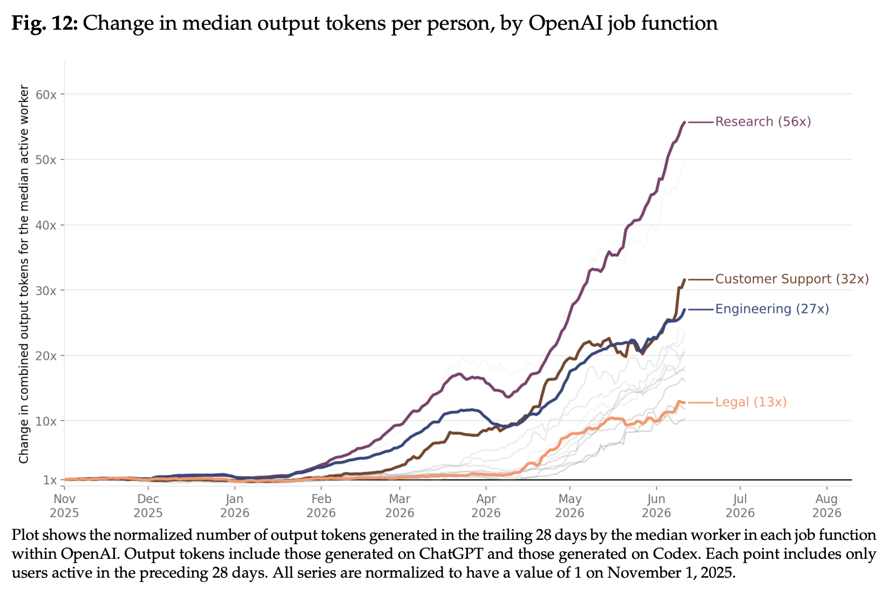
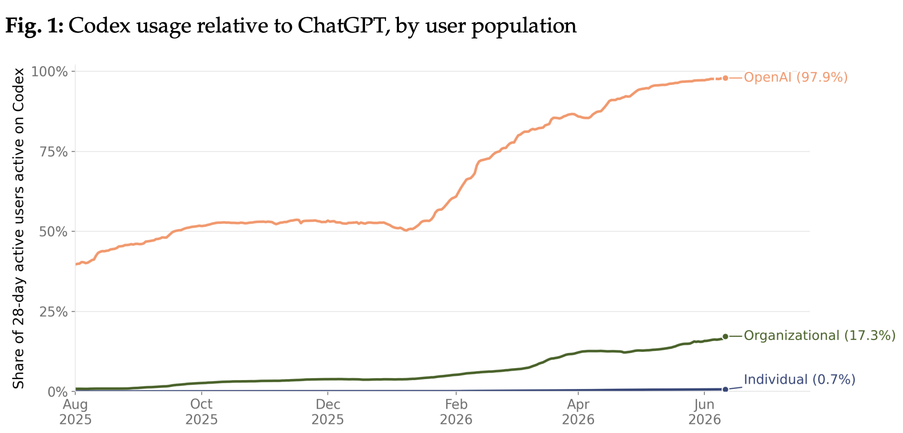
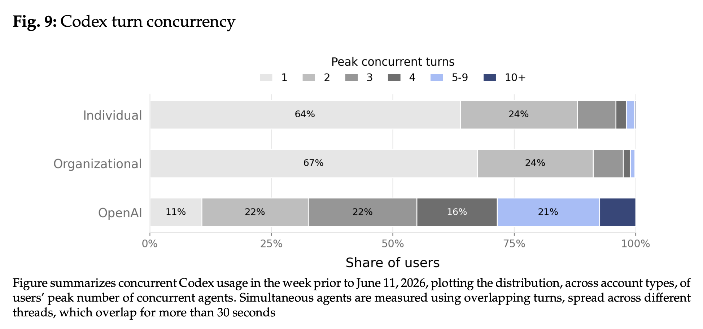

近年、生成AI（Generative AI）は、単にユーザーの質問に回答する対話型のツールから、ユーザーに代わって自律的に複数のステップを伴うタスクを実行するシステムへと決定的な進化を遂げている。2026年6月25日、OpenAIは自社の「Codex」プラットフォームの利用データに基づき、この「Agentic AI」へのシフトが人々の働き方をどのように変容させているかを分析した経済研究論文を発表した。
本稿では、この最新の大規模データ分析と関連する産業界の知見を統合し、Agentic AIの台頭がもたらす組織やワークフローの根本的な再設計、そして今後の労働市場に対する深い示唆について解説する。
Agentic AIの普及：急速かつ不均一な導入
Agentic AIシステム、とりわけCodexの利用は指数関数的な成長を見せている。2026年の上半期だけでアクティブユーザー数は急激に増加し、初期のコアユーザーであったソフトウェア開発者（Developer）層を超え、広範なナレッジワーカー（Knowledge Worker）へとその裾野を広げている。
しかし、その導入状況は極めて不均一（Uneven）である。論文では、ユーザー層をIndividual（個人アカウント）、Organizational（組織アカウント）、そしてOpenAI内部の従業員の3つに分類して比較を行っているが、そこには顕著な差異が観察される。

最も劇的な変化を見せているのはOpenAI内部である。内部環境では、Codexの利用がほぼ普遍化しており、業務におけるAI利用のインターフェースはChatGPTなどの対話型AIからAgentic AIへと完全に置き換わっている。特に特筆すべきは、Researchチームにおけるトークン消費量の成長が他のあらゆる職種と比較して群を抜いて高い点である。これは、研究開発という最も高度で複雑な探索的プロセスにおいて、Agentic AIが不可欠なインフラとして定着し、爆発的な生産（Output）を支えていることを示唆している。
一方、外部のOrganizationalユーザーにおける導入は着実に進んでいるものの、利用部門の偏りや組織ごとの摩擦が存在し、Individualユーザーに至ってはAgentic AIの本格的な活用は未だ一部の先駆者に留まっているのが現状である。

対話（Conversation）から委任（Delegation）への転換
従来のChatGPTに代表される対話型インターフェースは、情報の検索、助言の提供、あるいは単発のテキスト生成といった「会話（Conversation）」を主眼としていた。対照的に、CodexのようなAgentic AIツールの本質は「委任（Delegation）」にある。
ユーザーはAIに対し、自律的に外部ツールを操作し、ファイルを精査し、システム上のコマンドを実行し、成果物を生成または修正するようタスクを引き渡す。このシフトは、ユーザーがAIに委託するタスクの複雑性の増大に如実に表れている。論文によれば、経験豊富な人間が完了するまでに8時間以上を要すると推定されるような大規模タスクをCodexに要求するIndividualユーザーの割合は、2025年末からわずか半年で約10倍に急増している。
コーディングを超えた応用領域の拡大
Codexは元来ソフトウェア開発の文脈で設計されたが、導入が深化するにつれて、その用途はコード生成の枠を優に超えている。
特に利用が進んでいるOpenAI内部や先進的なOrganizationalユーザーの間では、システム環境の構築、ドキュメントの起草、データ分析（Data Analysis）、コミュニケーションの調整、そして高度なリサーチに至るまで、ナレッジワークのライフサイクル全体へと応用領域が拡大している。これは、Agentic AIが単なる「コード補完ツール」ではなく、「汎用的なデジタル労働力」として機能し始めていることを意味する。
新たなワークフローの出現：並列化とシステム化
技術の歴史が示す通り、新しい汎用技術（General-Purpose Technology）が最大の生産性向上をもたらすのは、既存のプロセスを置き換えるだけでなく、その技術特有の強みに合わせて生産プロセス全体を再設計したときである。Agentic AIにおいても、先進的なユーザーはすでに自らの働き方を再定義し始めている。
その兆候は、特に以下の2つの指標においてOpenAI内部のユーザーデータに色濃く表れている。
エージェントの並列実行（Concurrent Agents）： Agentic AIはスレッド型の非同期モデルを採用しており、ユーザーはタスクの完了を待つ必要がない。OpenAI内部では、外部組織と比較して、複数のCodexエージェントを同時に並列稼働させるユーザーの割合が突出して高い（一部のユーザーは週に3つ以上のエージェントを常に同時並行で管理している）。これは、人間の役割が「単一タスクの実行者」から「AIエージェントのチームを指揮するマネージャー」へと根本的に変容していることを示している。
ワークフローのシステム化とSkillsの活用： 高度なユーザーは、その場しのぎの指示（Ad-hoc Prompting）を脱し、再現性のあるワークフローを構築している。これを可能にするのが、再利用可能な指示や外部ツールとの統合をパッケージ化した「Skills」やプラグイン機能である。OpenAI内部では、このSkillsの利用が他組織に比べて圧倒的に多く、日常的な反復業務に独自のコンテキストを持たせてシステム化することで、委任時の摩擦を極限まで減らしている。

非エンジニアリング領域での生産性向上
Agentic AIの恩恵は技術部門に留まらない。複数の事例（Case Studies）において、非コーディングタスクでの劇的な生産性向上（Productivity Gains）が報告されている。
例えば、HR（Human Resources）の領域では、Learning and Development（L&D）プロセスにおいてノーコードプラットフォームとAgentic AIを組み合わせることで、コンプライアンス研修システムの自律的管理が実現し、手作業による負担を最大70%削減しつつ、リアルタイムでの学習分析や介入が可能となっている。
さらに金融機関のJPMorgan Chaseの事例では、複雑な法的要件の確認やコンプライアンスプロセスにおいてAgentic AIを活用することで、最大20%の効率化を達成している。また、Salesチームにおけるリード変換の加速や、Securityチームでの脅威の事前検知など、多様なビジネス機能（Business Functions）全体で、AIが受動的なアシスタントから能動的な実行者（Actor）へと進化し、従業員一人当たりの探索・作業時間を劇的に削減している。
働き方の再設計と倫理的課題（Ethical Implications）
Agentic AIの台頭は、組織の再構築（Workforce Restructuring）とそれに伴う倫理的な課題を不可避なものとする。
人間の役割のパラダイムシフト
AIが実行（Execution）ベースのタスクを担うようになるにつれ、人間の役割は直接的な作業から、AIの委任、監視（Supervision）、調整（Coordination）、および最終レビューへと大きくシフトする。この移行は、従来のジョブディスクリプションや採用基準、キャリアパスのあり方を根本から覆す可能性を秘めている。将来の労働市場では、純粋な処理能力以上に、戦略的意思決定、問題解決の創造性、そして「AIシステムをいかに効果的かつ安全に管理するか」というシステム思考が最も価値のあるスキルとなる。
ガバナンスと説明責任
Agentic AIの自律的な意思決定は、組織に新たなガバナンスの課題を突きつける。AIが採用、人事評価、あるいは金融取引などに関与する場合、そのアルゴリズムの不透明性（ブラックボックス問題）は、説明責任（Accountability）や法的責任の所在を曖昧にし、既存のバイアスを増幅させるリスクを孕んでいる。
これを回避するためには、単にAIを導入するだけでなく、Human-in-the-loop（人間の介入・監視を組み込んだシステム）の設計を徹底し、透明性を確保するための強固なガバナンスフレームワーク（Governance Frameworks）を構築することが急務である。技術者、倫理学者、法務専門家、そしてビジネスリーダーによる学際的なアプローチが求められている。
まとめ
OpenAIのCodex利用データの分析が鮮明に描き出しているのは、私たちが「AIに答えを尋ねる」段階から、「AIシステムを管理し、仕事を遂行させる」段階への移行期にあるという事実である。
とりわけ、Researchチームの圧倒的な成長や、複数の並列エージェント（Concurrent Agents）、そしてSkillsを活用したワークフローの高度化は、採用摩擦を取り払った環境下においてAgentic AIがいかに巨大な生産性を解放し得るかを示す強力な先行指標である。
Agentic AIは単なる業務効率化のツールではない。それは仕事の構造、組織のあり方、そして人間が果たすべき付加価値の本質を問い直す、技術的かつ社会的なパラダイム転換である。この進化の行く末を正確に理解し、倫理的なガバナンスを確保しながら組織のワークフローを再設計していくことこそが、次世代の知能革命において生き残り、飛躍するための鍵となる。